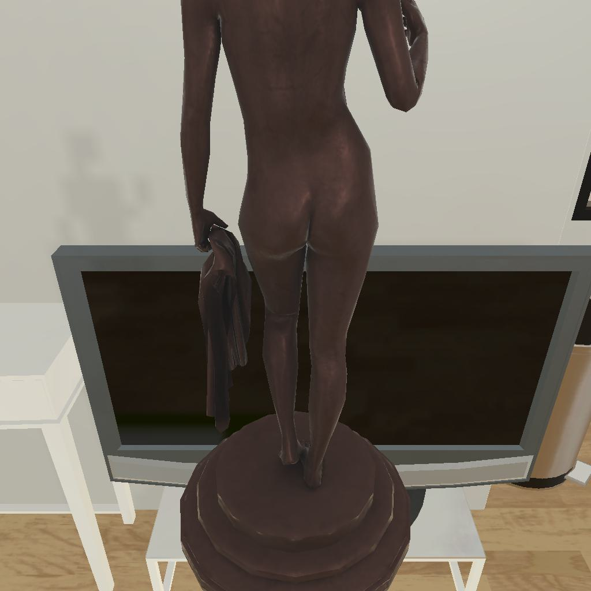

---------------------------------------------------------task: 4---------------------------------------------------------
--------------------------------------------------------------------------------------------------------------------------------------------------------------------
--------------------------------------------------------------------------------------------------------------------------------------------------------------------
Step:--------------------------------------------------------------------------9-------------------------------------------------------------------------------
----------------------------------------
VLM Prompt:
Image1:
Image2:
**Instruction**
1. Analyze the provided images to identify all visible household objects and compare the difference between images (e.h. whether the object is opened or not and taken on hand or not), focusing on those relevant to the task description "look at statue under the floorlamp."
2. Use the analysis of images and the task hint "The agent must find an object of the desired type, locate and turn on a light source with the desired object in-hand." to answer the question: what is the most reasonable action in the choices for the task description "look at statue under the floorlamp"?
3. Decide and write the answer using the template: The answer is: (i): , where i is the real number. If there is no desired object in images, search every place based on **Initial Observation** to find the object. And if no one is exactly correct, choose a similar answer.
**Initial Observation**
You are in the middle of a room. Looking quickly around you, you can see armchair (1), coffeetable (1-2), sidetable (1), garbagecan (1), drawer (1), sofa (1), diningtable (1)
**Answer Choices**
(1): go to armchair 1
(2): go to sidetable 1
(3): go to garbagecan 1
(4): go to drawer 1
(5): go to sofa 1
(6): go to coffeetable 2
(7): go to diningtable 1
(8): put statue 1 in/on coffeetable 1
(9): examine statue 1
(10): examine coffeetable 1
**Answer**
Let's think step by step by following the instructions.
----------------------------------------
----------------------------------------
Original Response:
1. Analyzing the provided images, we can see that the only household object that is clearly visible is a statue. There is no visible difference between Image1 and Image2; they appear to be identical. There is no indication of an object being opened or taken in hand in either image. The task description mentions a "floorlamp," but no such object is visible in the images provided.
2. Based on the analysis and the task hint, we can infer that the agent needs to locate a light source (floorlamp) and turn it on while holding the statue. However, the images do not show a floorlamp or the agent holding the statue.
3. Since the initial observation mentions that we are in the middle of a room and provides a list of objects in the room, we need to choose an action that will help us find the floorlamp and complete the task described. However, none of the answer choices directly involve finding or turning on a floorlamp. The closest action related to the task description would be to "examine statue 1" to see if the agent can pick it up and then look for the floorlamp to complete the task.
The answer is: (9): examine statue 1.
----------------------------------------
----------------------------------------
>>> Refine Original VLM Response and Get Pure Action: examine statue 1
----------------------------------------
-----------------------------------------------------------------
Running time: 9.834961652755737 seconds
Total Money: 1.4562500000000003
-----------------------------------------------------------------
-----------------------------------------------------------------
Text Observation:This is a normal statue 1
-----------------------------------------------------------------
UNSUCCEED